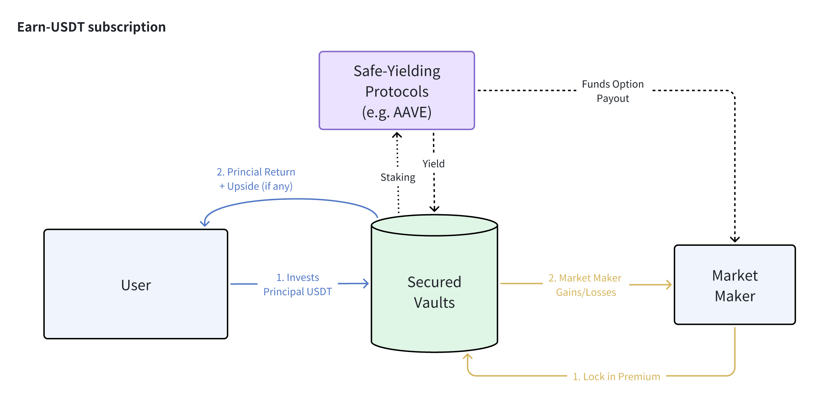
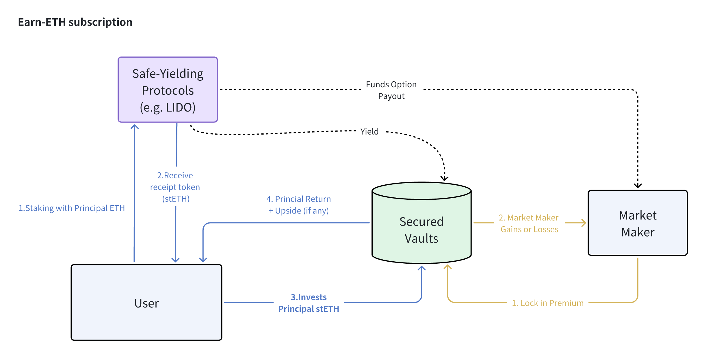
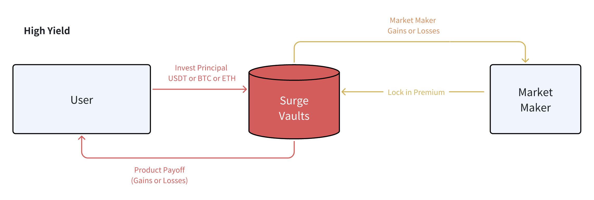

Defining Your Risk Preference
How much downside risk do you wish to take?
Earn Protocol
The 'Earn' protocol category is designed for risk-averse depositors looking for the utmost downside protection of their capital. Earn vaults will stake users' deposited capital in safe-yielding protocols (eg. AAVE) to generate a base level of interest, and utilize a portion of that guaranteed income to fund option premium with market makers for upside potential.
The end result will maximize downside protection, while still maintaining some upside potential should the market move favourably in the user's direction.
With that being said, please note that a critical design component requires the passive yields offered by the eligible staking protocols to be meaningfully above the product's worst-case payout, in order to properly fund the option premium to generate the upside return. As such, should the user be holding ETH instead of USDT, he/she will need to convert the ETH into stETH in a liquid staking protocol such as Lido, before locking the stETH into the protocol vaults to benefit from the extra yield accretion.


Surge Protocol
For users with a greater risk-reward tolerance, the protocol also offers higher-return structures with an upfront capital 'ante'. Surge protocols are solely targeted at aggressive users who are desirious of substantially high returns in exchange for capital losses.

With these Surge-based products, the protocol vault will lock in both the user's principal as well as the market makers' premium at trade inception, analogous to a 'poker-ante' of sorts**. The locked capital positions will not be restaked to any other protocols, and it serves as the committed-ante against the final payoff.
Let's use the Surge-Rangebound product as an example. Should the price of the underlying asset remain strictly within the barriers by final maturity, the user will receive an exponentially higher return than he would have under the Earn version. However, should the opposite happen, the structure will be early-terminated, with the locked principal being transferred to the market maker as the 'winner' of this strategy.
Once again, these products are intended for users holding a very strong market conviction, and would like to put that confidence to test in hopes of earning a very high rate of return in exchange for principal losses.
PSA: Special Note on Rangebound Products
Pictorial Illustration of How Rangebound Works in Practice
While simple in theory, the Rangebound product actually has some design challenges, especially when it comes to DeFi on-chain compatibility:
- The product references a series of historical prices, rather than a 'point-in-time' check at expiry.
- The product can be 'knocked-out' should the price barriers get breached.
The product can be knocked-out at any second, but it's technically unfeasible to refresh on-chain price references continuously throughout the day.
- By extension, range-checks are "backward-looking" out of necessity.
The team has made the following design compromises against the preceding challenges:
Daily Range Checks:
- In the interest of gas fees and on-chain TPS, our Rangebound product will only do a daily price check (at 4pm OTC+8) of whether the product has been knocked out over the past 24 hours.
- Knocked-out products will terminate with no more exposure going forward.
Daily Product Cycles:
- Consistent with the daily range checks and settlement cadence, our observation cycle will always begin from the _next _4pm (OTC+8) period
- Nevertheless, users are free to subscribe and purchase a Rangebound product at anytime, and their Base+ Yield will start accruing immediately.
Early Termination vs Final Withdrawal:
- Rangebound products which are 'knocked out' are effectively 'game over'; however, user deposits remain staked in Aave, and we must wait until final maturity for users to withdraw the principal in our current iteration.